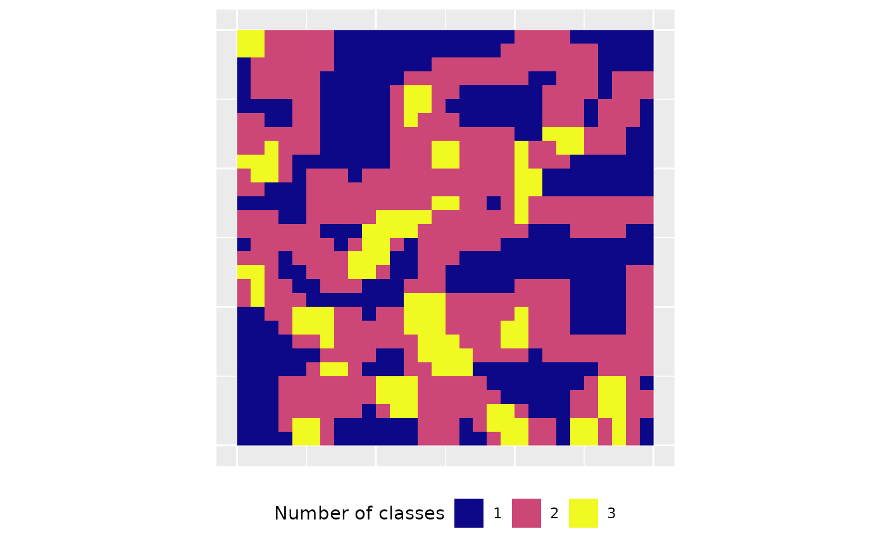

Results of a landscape analysis are scale dependent (Šímová 2012). One approach to deal with this is by using a moving window (Hagen-Zanker 2016). For each focal cell in the landscape, a matrix is used to specify the neighborhood and the metric value of this local neighborhood is assigned to each focal cell (Fletcher 2018). Thereby, the windows are allowed to overlap (McGarigal et al. 2012). The result of a moving window analysis is a raster with an identical extent as the input, however, each cell now describes the neighborhood in regard to the variability of the chosen metric (Hagen-Zanker 2016). Of course, the selection of the matrix size largely influences the scale of the result (Hagen-Zanker 2016).
Implementation in landscapemetrics
We provide the function window_lsm() in
landscapemetrics to analyse an input raster using the
moving window approach. The function allows to specify the neighborhood
using a matrix using the terra::focal() function
internally. Currently, only the landscape level metrics are possible to
calculate and they can be specified similarly to
calculate_lsm(). For details, see
?list_lsm().
library(landscapemetrics)
library(terra)
library(ggplot2)
# internal data needs to be read
landscape <- terra::rast(landscapemetrics::landscape)First, we need to specify the local neighborhood matrix. This matrix
must have sides defined as odd numbers, in which the focal cell is
always the center cell (for more details, see
?terra::focal()).
moving_window <- matrix(1, nrow = 3, ncol = 3)
moving_window## [,1] [,2] [,3]
## [1,] 1 1 1
## [2,] 1 1 1
## [3,] 1 1 1Now, we can easily pass this matrix to window_lsm()
together with the input landscape. For this example, we want to
calculate the number of classes (lsm_l_pr) and the joint
entropy (lsm_l_joinent) for the local neighborhoods.
result <- window_lsm(landscape, window = moving_window, what = c("lsm_l_pr", "lsm_l_joinent"))
result## $layer_1
## $layer_1$lsm_l_joinent
## class : SpatRaster
## dimensions : 30, 30, 1 (nrow, ncol, nlyr)
## resolution : 1, 1 (x, y)
## extent : 0, 30, 0, 30 (xmin, xmax, ymin, ymax)
## coord. ref. :
## source(s) : memory
## name : clumps
## min value : 0.000000
## max value : 3.093069
##
## $layer_1$lsm_l_pr
## class : SpatRaster
## dimensions : 30, 30, 1 (nrow, ncol, nlyr)
## resolution : 1, 1 (x, y)
## extent : 0, 30, 0, 30 (xmin, xmax, ymin, ymax)
## coord. ref. :
## source(s) : memory
## name : clumps
## min value : 1
## max value : 3To be type-stable, the result will be a nested list. The first level
includes all layers of a SpatRaster (only one if a
SpatRaster is provided), the second level contains all
selected metrics. The resulting SpatRaster describe the
local neighborhood according to the moving window around each focal
cell. In the case of lsm_l_pr this the number of classes
present.

In the future, we also plan to allow class level metrics, however, patch metrics are not meaningful (McGarigal 2012) and will not be added in the future.
References
- Fletcher, R., Fortin, M.-J. 2018. Spatial Ecology and Conservation Modeling: Applications with R. Springer International Publishing. 523 pages
- Hagen-Zanker, A. 2016. A computational framework for generalized moving windows and its application to landscape pattern analysis. International journal of applied earth observation and geoinformation, 44, 205-216.
- McGarigal K., SA Cushman, and E Ene. 2023. FRAGSTATS v4: Spatial Pattern Analysis Program for Categorical Maps. Computer software program produced by the authors; available at the following web site: https://www.fragstats.org
- Šímová, P., & Gdulová, K. 2012. Landscape indices behavior: A review of scale effects. Applied Geography, 34, 385–394.